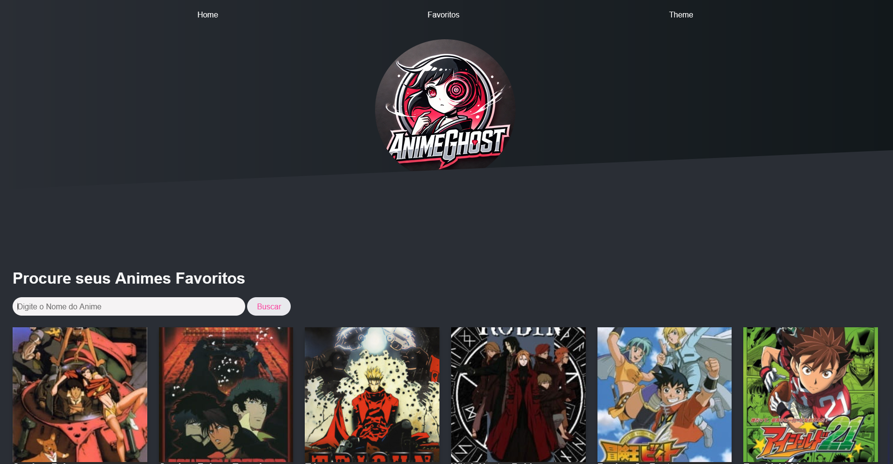
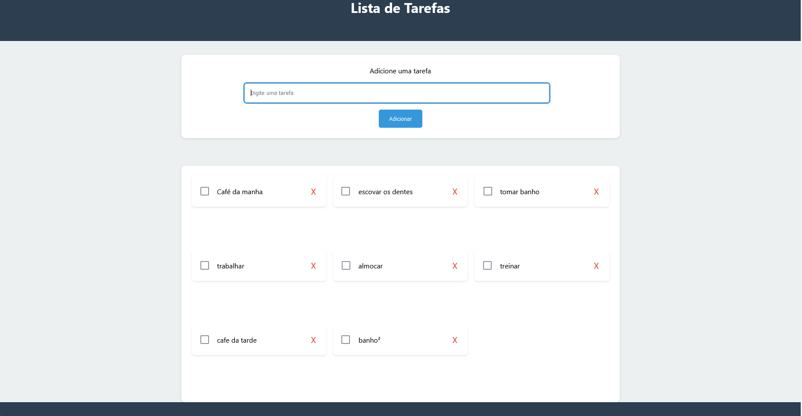
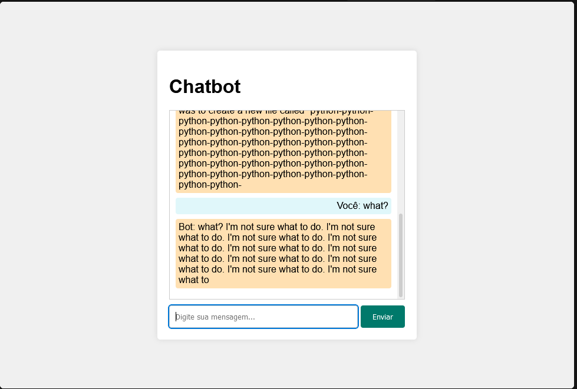

Olá, eu sou o Marlon
Desenvolvedor Front-end
Minhas Tecnologias
Sobre Mim
Sou Marlon, um desenvolvedor front-end apaixonado por criar interfaces dinâmicas, minimalistas, bonitas e responsivas. Com experiência em HTML, CSS, TailWind e JavaScript busco sempre melhorar a experiência do usuário e inovar em cada projeto.
Minha jornada no desenvolvimento começou com a faculdade. Estou cursando o segundo semestre de Análise e Desenvolvimento de Sistemas, atualmente estou focado em aprimorar minhas habilidades, aprender novas linguagens e frameworks/librarys além de construir projetos pessoais.
Projetos
🔗Buscador de Animes
Buscador de animes com opção de adicionar animes do seu interesse para lista de favoritos. Utilizando a API jikan(v4) e temas dark e light mode,além de utilizar grid para responsividade.
Ferramentas: HTML,CSS e JS.
🔗To-do List
Simples To-Do List para aprender os fundamentos de JavaScript e DOM.
Ferramentas: HTML,CSS e JS.
🔗ChatBot
ChatBot utilizando um modelo text-generation, Xenova/gpt2.
Ferramentas: JS, Node.js(express), HTML, CSS.